新艺油画一款用3D技术模拟油画的强大软件。它从油画绘画工具以及绘画过程等各方面模拟油画的创作过程，旨在为大家提供一个更接近真实的专业的油画平台。它的主要功能有：
这个产品对初学者和专业人士一样适用。对于初学者来说，可以掌握油画的每一个工具，并对绘画过程进行模拟，实训。而对于专业人士来说，这是一种新的媒介，新的平台，你可以用它来完成你的新作品。
要使用这个应用程序，你需要有一个支持Apple Pencil的iPad Pro 12.7或iPad Pro 9.7。
当您使用Apple Pencil时，您可以三维定位。上下方向称为高度，而左右方向称为方位角：
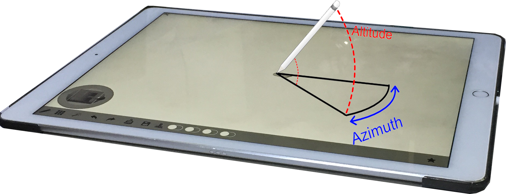
这个应用程序的目标是尽可能地模拟真实的油画。准确地说，仿真包括以下几个方面：
此应用程序尽可能模拟真实的绘画方法。它不仅提供了一个用于准备颜料的调色板，而且还提供了很难重复绘画的功能。在相同的条件下，用户所做的所有笔画都非常相似，但从不相同。
支持绝大部分的油画工具，如画笔，画刀和蓬松笔。
该应用程序旨在模拟自然绘画过程。混色是绘画解决方案的主要功能。当然，我们支持它。此外，我们在绘画过程中模拟真实的混色过程。我们的目标是提供以下高级功能
传统软件中使用颜色的方式都是基于机器显示颜色的方式，它是基于光的发射的，而现实世界中染料和颜料的颜色是基于光吸收的。
对于某些颜色来说，光发射的混合与光吸收的混合是不同的。例如，随着发光，与黄色混合产生灰色。但是在吸收光中是绿色的。因此，使用发光系统进行绘画不但对用户不直观，而且在梯度上给出了错误的结果。
| 基于光的发射 | 基于光的吸收 | |
|---|---|---|
| 渐变： 红色到黄色 | 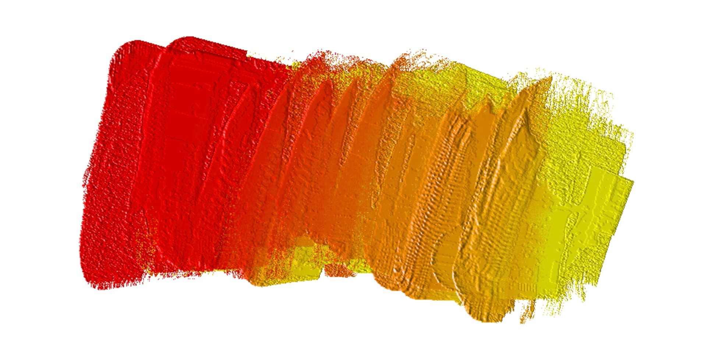 | 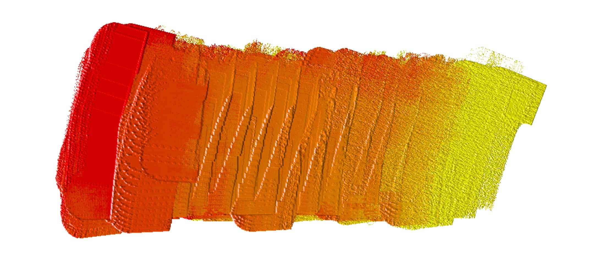 |
| 渐变： 蓝色到黄色 | |
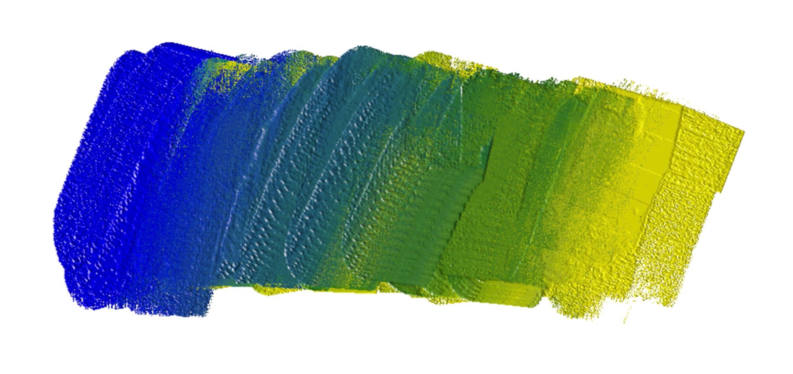 |
| 渐变： 红色到蓝色 | 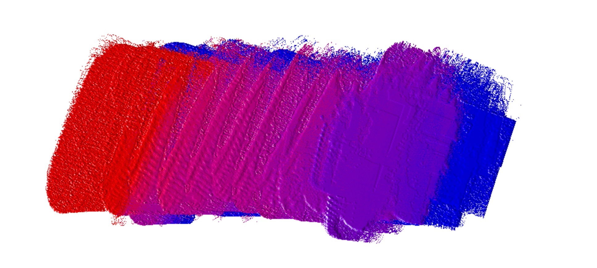 | 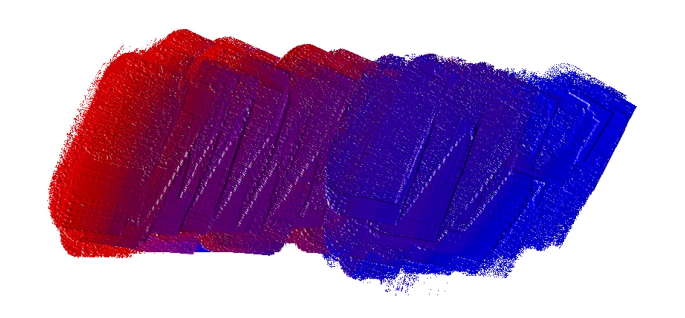 |
| 色轮 | 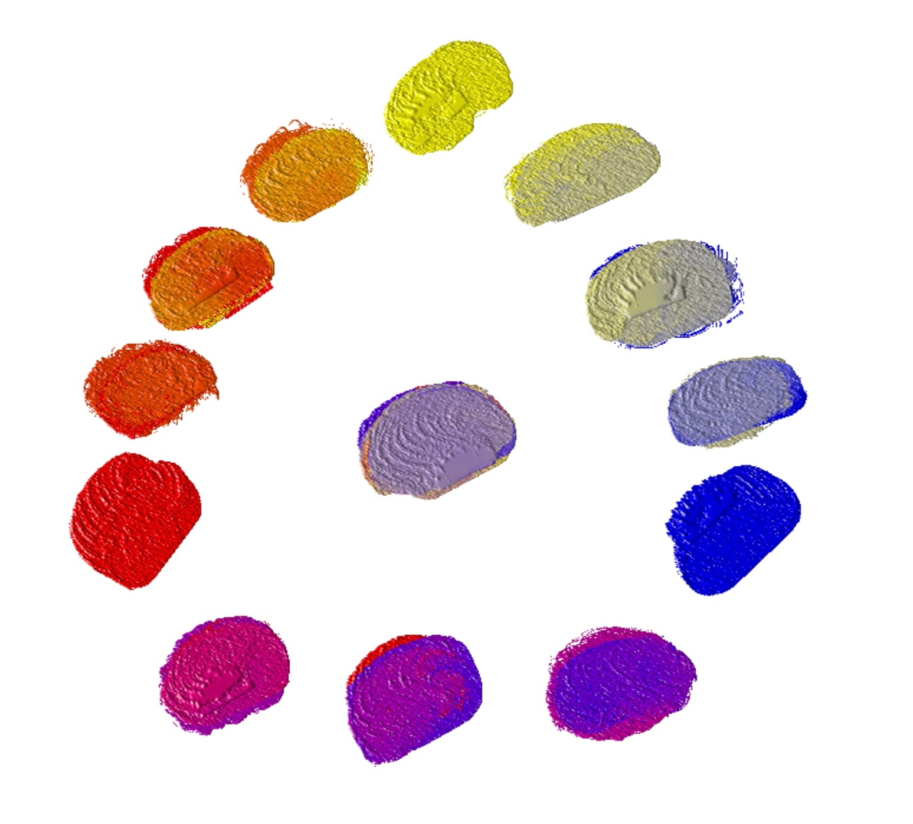 | 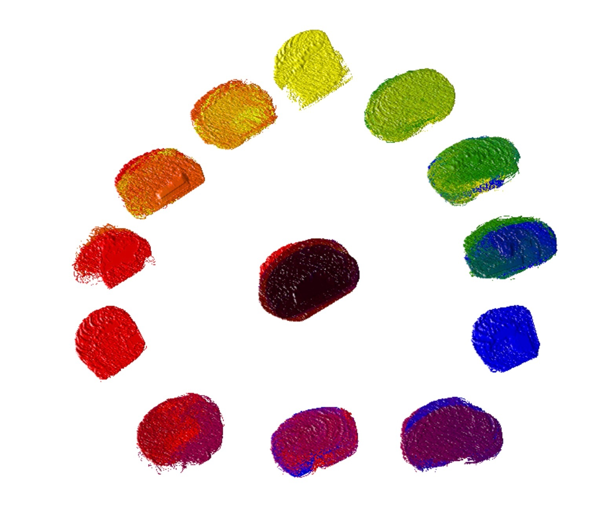 |
可以使用发光混合来产生从红色到黄色和从红色到紫色的梯度。但只有光吸收混合可以混合从蓝色到黄色的绿色，红色，蓝色和黄色的黑色渐变。简单一点地说就是：发光中的混合倾向于白色，并且光吸收中的混合倾向于黑色。
| 我们的模拟 | 真正的油混合 | |
|---|---|---|
| 渐变： 蓝色到黄色 |
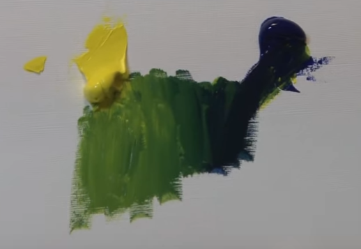 | |
| 渐变： 红色到蓝色 |
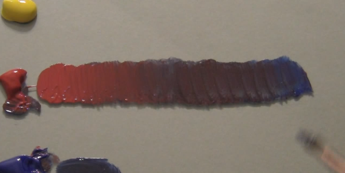 | |
| 渐变：红色到黄色 |
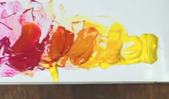 | |
| 色轮 |
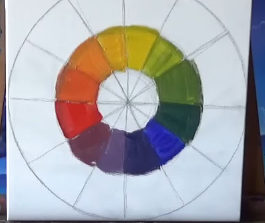
|
Our application uses the system of Light Absorption, the primitive colors are Red, Yellow and Blue. So you can blend colors in the same way as real Oil Painting with a Limited Palette.
Our Painting Tools like Knife and Brush are a Color carrier. It can take some color from one location on Painting Support and put to another location. All properties are kept during the transfer such as quantity and density.
During the painting, some Painting Tools like Knife and Brush collects different colors in different locations. It forms a Color Pattern.
| Description | Screen Shot |
|---|---|
|
The creation of Color Pattern
Pattern is kept in the Painting tool, it can be saved in Application |
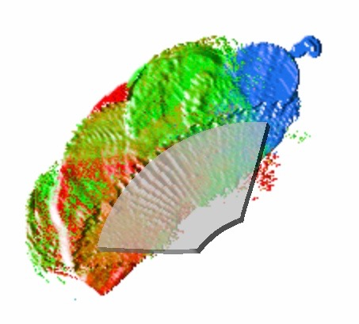 |
| Dot Stroke with Color Pattern |
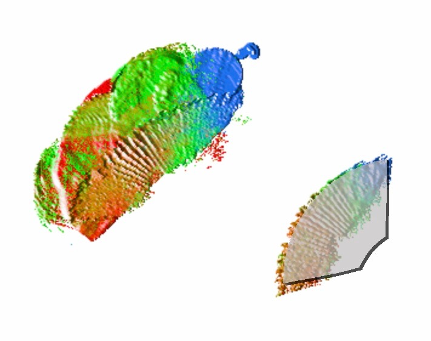 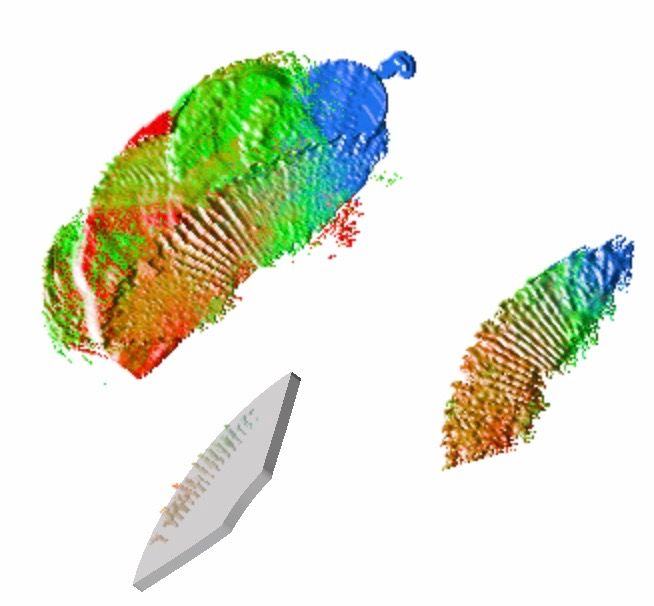 |
| Different Painting strokes with the same Color Pattern |
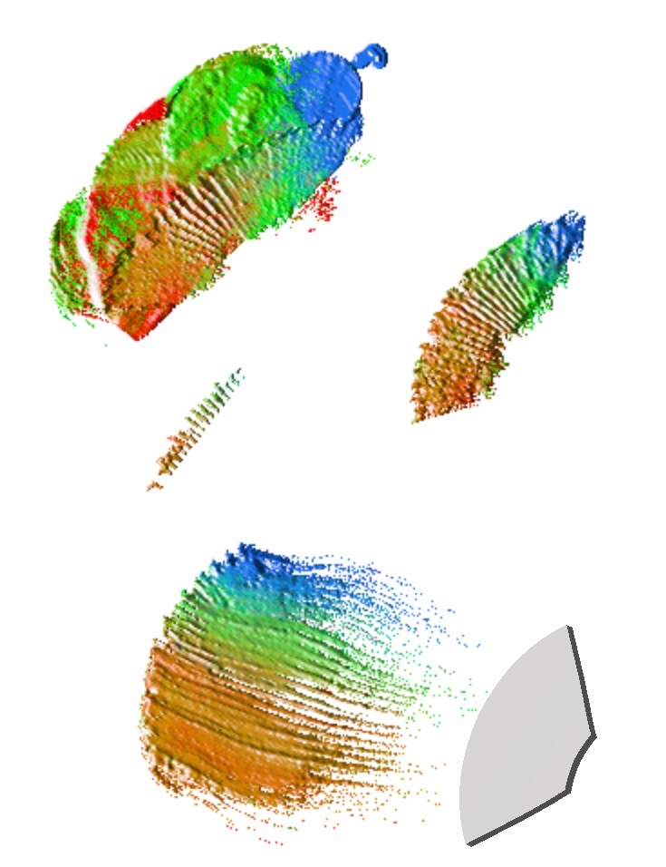 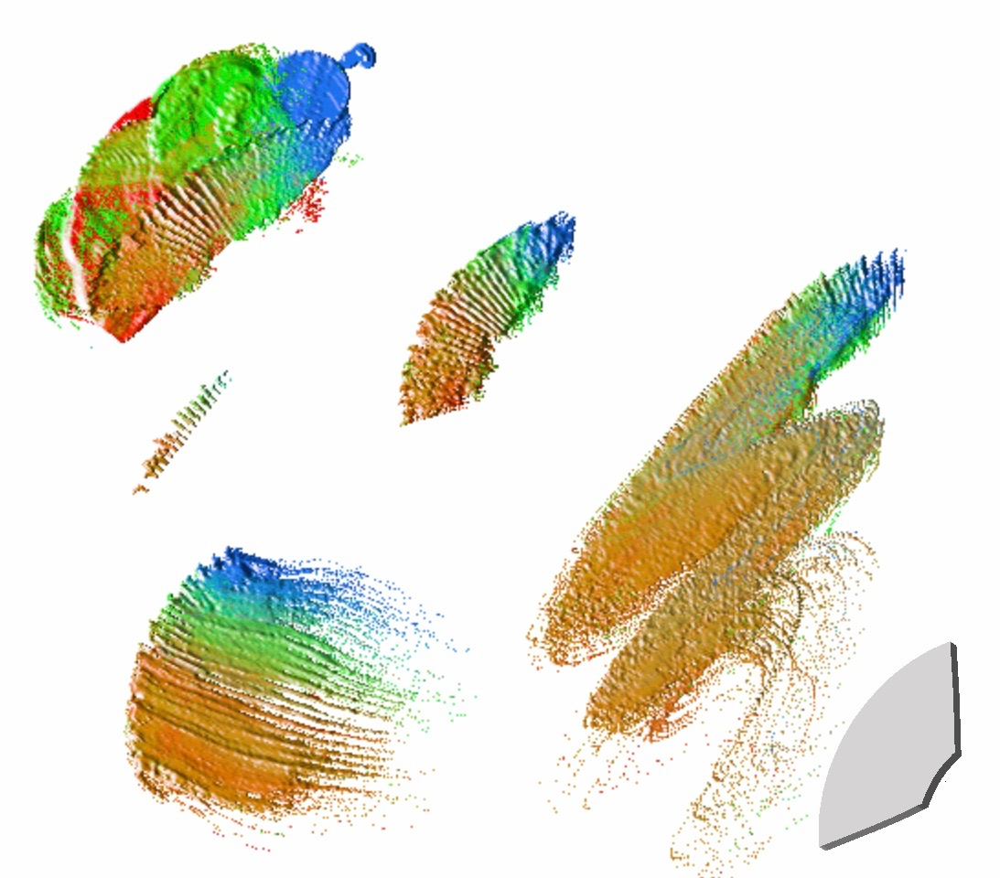 |
A Color Pattern can be saved in two ways:
| Color Pattern Management | Description |
|---|---|
|
Stored In the current Artwork |
It is a Color Pattern associeted with this Painting Tool. It can be reused with the option Auto Reset. |
|
Stored In the Application |
A separated Painting Tool will be created. |
In the real physic world, the density of Color plays an important role on Painting. It influences the thickness of layer and capability of color spreading and blending. More density of liquid can produce easier the effect Impasto, and thinner liquid can give an effect of water or cloud.
This application simulates the medium like Turpentine. In the real Oil Painting, Turpentine is a thinner, it will make the painting look more like water-color, depending on the quantities and it makes it opaque.
The simulation of Color Liquid consists of a Color management in two states: Dried and Wet. Color Liquid in Dried is in fact a liquid anymore, it is a solid state. It doesn't participate the color blending in painting. However, Color Liquid in Wet is managed by a property named as Wetness, which is used to control the density of Color Liquid. A Wet Color can become Dried via a tool Dryer, which shows dryness state of entier Artwork in a dedicated view. But the Dried liquid can never come back to Wet. The Wetness is controlled by the tools Turpentine, Fluffy Mop and Wetter. The last shows Wetness of entier Artwork in a dedicated view.
The simulation of Wetness consumes a lot of iPad processors. With a important value of Wetness, the response time of Apple Pencil will be impacted. In worst time, it increases by a factor of 2. But it is still acceptable.
Painting Surface is a medium support, where you produce your Artwork. The difference of texture of medium support may influence Strokes when the layer is thin. Our application supports a lot of supports with different fabric texture and degree of rough.
| Item | Description | Default Value |
|---|---|---|
| Left and Right Hand | Panel Layers for Right or Left hands | Right hand |
| Tool Panels timeout | The time out to display the tool bars and views after each stroke, The purpose of this parameter is to prevent any collision of painting touch with tool selection during the repeated Painting. | 1.0 second |
| Enable state of Tool panels timeout | The timeout can be disabled. | true |
| Error Silence | Sound for an error or alert | false |
| Save Interval time | The interval time to save the artwork | 1 minuite |
| Auto Save | Enable/Disable the automatic save of the artwork | true |
| Sensibility | It controls the sensibility of pressure of Apple Pencil. When it is 1.0, it uses directly the pressure of Apple Pencil. When it is 2.0, only 0.0 - 0.5 of device pressure will be used for Painting. The value could be from 1.0 to 5.0. | 2.5 |
A Painting can be imported and exported in two formats:
The purpose of image format support is to communicate with other applications.
The import of image file be done in two ways
From outside of Impasto such as Photo Gallery of IPad, you can select an image and then creates a new Painting in the same size of imported image and imports the image. In fact, this import consists of two steps:
The export can be done only inside of Workshop
Sharing deals with only image files.
The purpose of his file is to exchange paintings between IPad and for backup/restore.
The export can be done only inside of Gallery. All exported files are saved in Sharing Folder of our App. A Folder is created per Group. These files are accessible via ITures.
You may need to clean up from time to time in the Setting panel of Impasto.